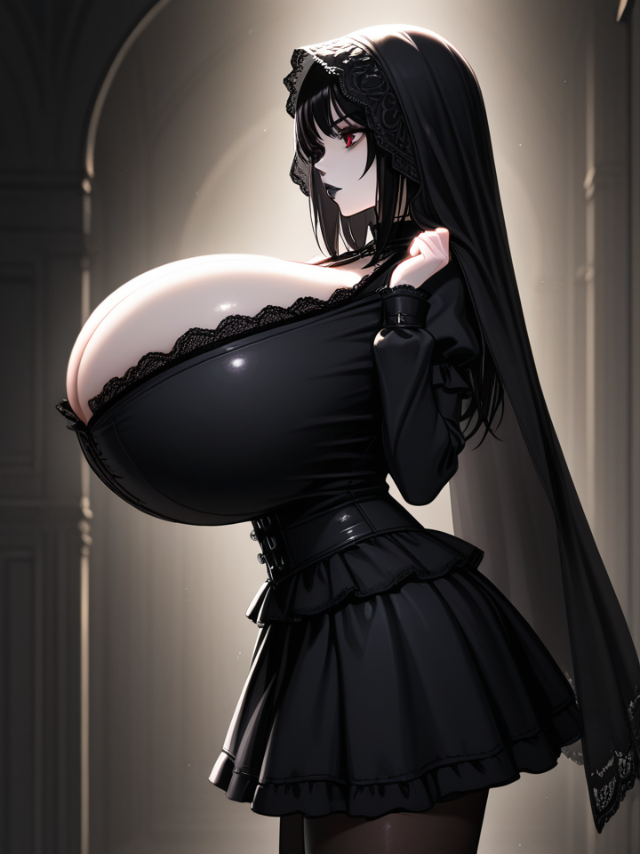

hi / Last edited: Mon, Jun 2 [PINNED]
this place is for my random thoughts, fixations, and (self-directed) complaints. things are rather fleeting here
this place is for my random thoughts, fixations, and (self-directed) complaints. things are rather fleeting here

I shud dra more so I can hide in a world of my own creation
I like soft fantasy and fluffy fur (furry?!) and big features
1 pot ramen. boil eggs in da pot, then remove. sautee onions, garlic, mushroom, bok choy, whatever in the pot in oil. deglaze with water, add sliced carrots, add instant noodles, cook according to package. serve with slices scallions, pickled ginger/peppers, sesame seeds, spice, whatever
container with:
half salad + delicious halal sauces. sliced strips of lettuce, diced tomatoes and cucumbers, whatever
half bed of turmeric basmati rice + roughly chopped protein (beef, chicken, lamb, whatever. chicken's probably healthiest tho)
I should draw a little bit each day, even if I don't like what I end up drawing, because I want to enjoy the process of drawing more (I have no satisfying hobbies)
why do I fuss so much about keeping my stuff (like this blog, my computer, my projects, etc) mess-free? it is literally mine to mess around with. no one will get upset with me for moving stuff around while having fun with MY stuff
update: my lord I hate wasting my time. I think that's the problem - it's one thing to mess around, it's another thing to mess around and not even have fun doing so
mya mya mya mya mya gwe gwe gwe hie hie hie hie sou sou sou sou sou sou
you can enjoy multiple things! your ambitions need not be singular overall, just at any given moment :)
I imagine the tops of her breasts jiggle in her shirt like jello
Russian has a LOT of allophony.
Palatalization and iotation
Russian distinguishes between palatalization (soft consonants, e.g. [kʲ]) and iotation (consonant followed by [j]).
Palatalization is most transparently written with ь but with other ways of arising.
Iotation is written with j-vowel characters.
Hard sign
An inserted ъ prevents the [j] of a j-vowel character from becoming palatalization on the preceding consonant.

when I like something a lot I feel guilty that I don't do more with it, and overwhelmed when I do